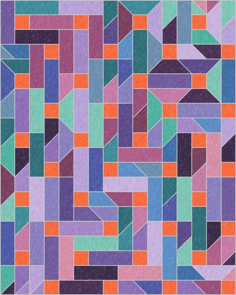
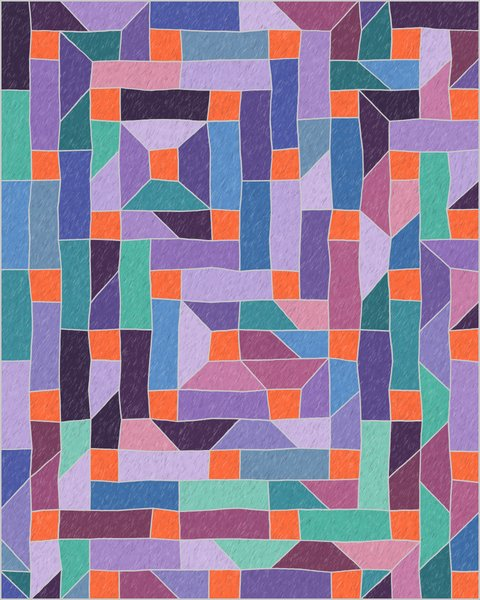
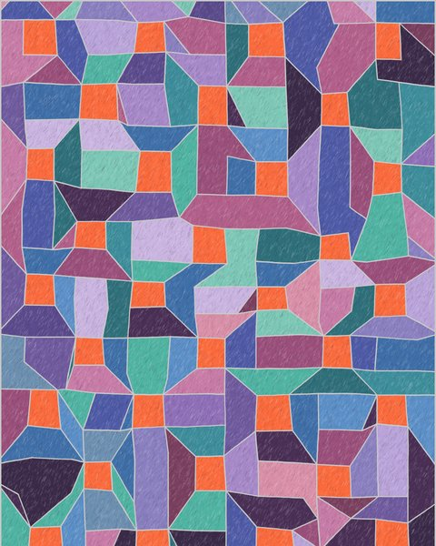

Geometric tilings inspired by a hand-drawn crayon picture: orange squares in a diamond-like pattern, with the spaces between filled by a few simple shapes. Each generator lets you change the colours, outlines and texture, and save or print the result.

The original. A neat 16 × 20 grid, tiled with three shapes in all four turns. A new arrangement every time.
Open →

The same tilings, but the grid corners shift at random and every line wavers as if drawn by hand. Sliders set how wonky.

The grid and pieces traced from the original picture, recoloured. Can also make new grids in the same style, 8 to 18 squares each way.